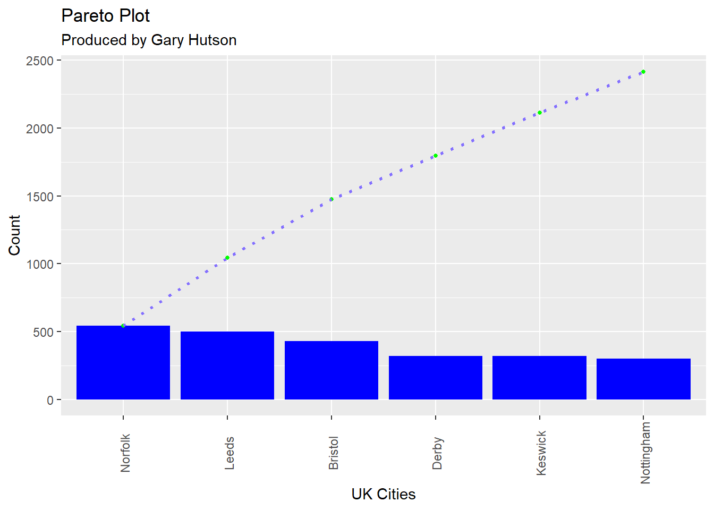

Background of Pareto Charts
A Pareto chart, named after Vilfredo Pareto, is a type of chart that contains both bars and a line graph, where individual values are represented in descending order by bars, and the cumulative total is represented by the line.
These charts are highly utilised in Six Sigma circles and conform to the Pareto Principle. The construction of the tool, in R, is shown in the following post.
Creating the R Data Frame
To create the R data frame we can use the following code:
This creates two vectors using the combine function (denoted with a c). These two code lines are run in by either selecting the code blocks and using the Run command in R Studio, or by using the key combination of Control + Enter.
Next, the data frame will be created:
myDf <- data.frame(
count = count,
UKCity = xVariable,
stringsAsFactors = FALSE
)This creates a data frame called myDf and uses the data.frame command to create a data frame with two fields, one named count using the count vector and another named UKCity using the xVariable vector.
Adding the Pareto components
Thus far, we have simply created a data frame with two columns. The next step will be to sort the categorical variable (UKCity) by the count associated with that field, so the highest counts will be grouped first on the Pareto Chart and we will add a cumulative statistic to the data frame in order to draw the traditional Pareto cumulative sum line.
Performing the descending sort
The R code here shows how to do the descending sort:
myDf <- myDf[order(myDf$count, decreasing = TRUE), ]What this does is uses the myDf data frame and then changes the order of the counts to show a decreasing count. This will put the highest counts at the top and the lowest at the bottom of the dataset. You could change the decreasing to FALSE, and this would force an ascending order.
Converting the categorical variable to a factor
We use the add field notation of $ (dollar) to add a new column to the data frame:
myDf$UKCity <- factor(myDf$UKCity, levels = myDf$UKCity)This says use the myDf data frame and overwrite the existing column = UKCity. Then, create a unique factor for each of those categorical variables, so if you had repeating categories say three cities that equalled Nottingham, this would show as just one factor instead of three. This is a way to group multiple categorical variables together. The levels = command specifies what levels to set the factor to.
Adding a cumulative sum to the data frame
This is simple: taking the count field we add each of the counts together to form a cumulative total:
myDf$cumulative <- cumsum(myDf$count)The code block shows that a field called cumulative has been added to the data frame (myDf) and the cumsumfunction has been used to create that cumulative total.
The data frame now looks like this:
| count | UKCity | cumulative |
|---|---|---|
| 543 | Norfolk | 543 |
| 500 | Leeds | 1043 |
| 430 | Bristol | 1473 |
| 321 | Derby | 1794 |
| 320 | Keswick | 2114 |
| 300 | Nottingham | 2414 |
In terms of data preparation, everything is now in place to start working with {ggplot2}.
Creating the Pareto Chart (with ggplot2)
The following code with be included in full, followed by an explanation of what the code is doing:
library(ggplot2)
ggplot(myDf, aes(x = myDf$UKCity)) +
geom_bar(aes(y = myDf$count), fill = "blue", stat = "identity") +
geom_point(aes(y = myDf$cumulative), color = rgb(0, 1, 0), pch = 16, size = 1) +
geom_path(aes(y = myDf$cumulative, group = 1), colour = "slateblue1", lty = 3, size = 0.9) +
theme(axis.text.x = element_text(angle = 90, vjust = 0.6)) +
labs(
title = "Pareto Plot", subtitle = "Produced by Gary Hutson", x = "UK Cities", y =
"Count"
)Fully explained: the library for {ggplot} is loaded into the current environment. Secondly, the {ggplot} function is used to specify the data and the aesthetics of the column to be used. This is then added to specify a bar chart (geom_bar) using the count field (y axis) and filling the bars with the colour blue.
The purpose of the stat = "identity" is to force {ggplot} to identify the count field stipulated on the y axis. Again, the bar is then added to a point geometry (geom_point) and the point is the cumulative total we calculated with the colour defined using an RGB value, with the point type (pch) equal to a circle.
Then, the geom_path function is used to add a path to the points and to specify what data type to group to, this is normally defaulted to group = 1.
Finally, the last part is to apply a custom theme to specify that the element_text should be at a 90 degree angle and the vertical justification equal to 0.6.
Running this code produces the Pareto plot, as below:

That’s it, we now have an excellent looking chart that can be reproduced every time R is refreshed.
This blog was written by Gary Hutson, Principal Analyst, Activity & Access Team, Information & Insight at Nottingham University Hospitals NHS Trust, and was originally posted at Hutson-Hacks.
This blog has been edited for NHS-R Style.